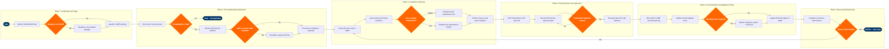

Airworthiness Directive (AD) Compliance
Maintenance, Repair & Overhaul › Airworthiness & Compliance · 19 L4 steps · 6 phases · 7 decision gates · Updated 2026-03-19 19:17
📊
Process Flow Diagram (BPMN)

📋
L4 Process Steps
| Step | Step Name | Role / Swim Lane | System | Input | Output | KPI | Dec? | Exc? |
|---|---|---|---|---|---|---|---|---|
Phase 1 1.1 |
Monitor FAA/EASA AD publication feed | Airworthiness Engineer | CAMP (Continuous Airworthiness Monitoring Program) | FAA ACAS / EASA AD database daily RSS feed | New AD log entry with urgency classification | AD logged within 24 hrs of publication; 100% capture rate | N | N |
| 1.2 | Classify AD urgency — Emergency, Priority, Routine | Airworthiness Engineer | CAMP | AD text, compliance deadline, subject system ATA chapter | AD urgency category assigned; emergency ADs flagged to Accountable Manager within 2 hrs | Emergency ADs escalated within 2 hrs of receipt; 0 missed emergency ADs | Y | Y |
| 1.3 | Log AD record and open compliance tracking | Airworthiness Coordinator | AMOS by Swiss AviationSoftware | Classified AD from Step 1.2 | AMOS AD record created with deadline, ATA chapter, and assigned engineer | AD record created in AMOS within 4 hrs of classification; 100% traceability | N | N |
Phase 2 2.1 |
Pull aircraft configuration records for AD ATA chapter | Airworthiness Engineer | CAMP | AD applicability criteria (aircraft type, series, modification status) | List of tail numbers with configuration state for affected ATA chapter | Configuration match completed within 8 hrs; 0 tail numbers missed | N | N |
| 2.2 | Determine fleet-wide AD applicability | Airworthiness Engineer | CAMP | Aircraft configuration records, AD applicability logic | Applicability determination: list of affected vs not-affected tail numbers | Applicability determination completed before 50% of compliance window expires | Y | N |
| 2.3 | Evaluate AMOC or interim relief options | Senior Airworthiness Engineer | AMOS by Swiss AviationSoftware | AD compliance method section; OEM service information; FAA AMOC precedents | Decision: accept standard compliance method or initiate AMOC request | AMOC evaluation completed within 48 hrs of AD receipt for routine ADs | Y | Y |
| 2.4 | Submit AMOC request to FAA Aircraft Certification Office | Designated Engineering Representative (DER) | FAA AMOC Portal (DragonWave / paper submission) | Engineering justification, test data, equivalent safety analysis | AMOC submission reference number; interim relief authorization if granted | AMOC submitted within 5 business days of decision; FAA acknowledgement within 10 days | N | Y |
Phase 3 3.1 |
Create AD compliance work order in AMOS | Maintenance Planner | AMOS by Swiss AviationSoftware | Applicability list, compliance method, deadline from CAMP | Work order(s) created in AMOS linked to AD record, with task card reference | Work orders created ≥14 days before compliance deadline for routine ADs | N | N |
| 3.2 | Identify and procure required parts and tooling | Maintenance Planner | Ramco Aviation | AD task card materials list, current stock levels from AMOS inventory | Purchase orders raised; parts reservation against work orders | Parts confirmed available ≥7 days before scheduled maintenance window; AOG sourcing SLA 4 hrs | N | Y |
| 3.3 | Determine maintenance venue — line vs hangar | Maintenance Planner | AMOS by Swiss AviationSoftware | AD task scope, aircraft access requirements, available maintenance slots | Venue decision: line maintenance window or heavy maintenance input | Venue decision confirmed ≥10 days before compliance deadline | Y | N |
| 3.4 | Schedule and confirm maintenance event | Maintenance Planner | AMOS by Swiss AviationSoftware | Maintenance venue, aircraft rotation schedule from Amadeus SkyWORKS | Confirmed maintenance slot; aircraft ground time blocked in ops schedule | Compliance event scheduled before 75% of deadline window consumed | N | N |
Phase 4 4.1 |
Issue AD task card and brief certifying technicians | Maintenance Supervisor | AMOS by Swiss AviationSoftware | Approved AD task card, AMM references, special tooling instructions | Technician briefing completed; task card issued with required certifications noted | Task card issued ≥1 hr before planned job start; 0 tasks started without valid authorisation | N | N |
| 4.2 | Execute AD compliance work per approved maintenance data | Licensed Aircraft Maintenance Technician (AMT) | Boeing Toolbox / CAMP | AD task card, AMM procedures, special tooling | Physical work completed; technician sign-off on task card steps | Zero rework rate due to incorrect procedure; work completed within planned man-hours ±10% | N | Y |
| 4.3 | Perform independent inspection and buy-back | Quality Assurance Inspector | AMOS by Swiss AviationSoftware | Completed task card, physical inspection of work area | QA sign-off; AMOS work order buy-back recorded | 100% of AD tasks require independent inspection; QA buy-back completed before aircraft release | Y | Y |
Phase 5 5.1 |
Record AD accomplishment in CAMP airworthiness log | Airworthiness Coordinator | CAMP | Signed-off task card, QA buy-back confirmation from AMOS | CAMP AD compliance record updated with date accomplished, tail number, and next due date | CAMP updated within 4 hrs of task completion; 0 gaps in airworthiness record | N | N |
| 5.2 | Update aircraft technical log and maintenance records | Licensed Aircraft Maintenance Technician (AMT) | AMOS by Swiss AviationSoftware | Completed buy-back record, AD reference number | Aircraft technical log entry; AD compliance endorsement in journey log | Technical log entry completed before aircraft return to service; 0 releases without AD documentation | N | N |
| 5.3 | Assess FAA/EASA regulatory reporting obligation | Airworthiness Engineer | AMOS by Swiss AviationSoftware | AD text, compliance method used, any deviations or extensions granted | Decision: submit formal compliance report or retain on file only | Compliance reports submitted within 8 calendar days where required by AD text | Y | Y |
Phase 6 6.1 |
Configure recurring interval alert in CAMP | Airworthiness Coordinator | CAMP | AD next-due parameters (calendar days, flight hours, cycles) | Recurring alert configured; next-due dates visible in CAMP due-list dashboard | Recurring alerts configured within 24 hrs of initial compliance; 0 recurring ADs missed at interval | N | N |
| 6.2 | Generate AD due-list report for maintenance planning | Airworthiness Engineer | CAMP | CAMP due-list data, 30/60/90-day forecast horizon | AD due-list report distributed to maintenance planning and operations; items within 30 days flagged | Due-list report generated weekly; 100% of items due within 30 days actioned with work order | Y | N |
📋